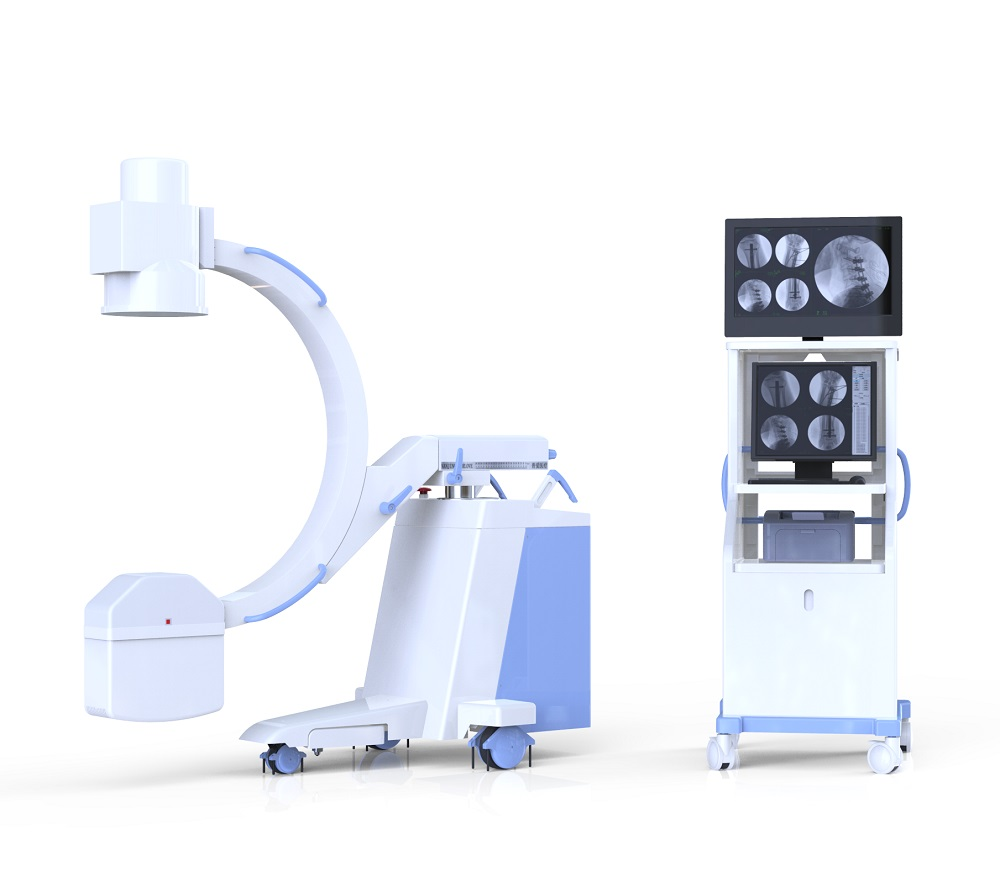

Sistema de brazo en C digital móvil de alta frecuencia
AR-M20B

X
Sistema digital de rayos X con brazo en C ARX-7000A
MGenerador de alta frecuencia con alta potencia y microfocus, optimiza imágenes digitales
Control de exposición inteligente, logrando bajas dosis de radiación
Patrones de trabajo múltiple para satisfacer diversas necesidades clínicas
El control de la luz vertical y de varias hojas reduce la radiografía suave de manera efectiva y la dosis de la piel de manera espectacular
El intensificador de imágenes conocido importado y la cámara CCD digital proporcionan imágenes de alta calidad y alta resolución
Los monitores LCD duales y de alta resolución mejoran drásticamente la calidad de imagen
Potente estación de trabajo gráfica digital con configuración estándar de DICOM 3.0 conectada a la red perfectamente, admite registros duales de registro de lista de trabajo y registro manual
La estación de trabajo tiene una función de almacenamiento digital de alta capacidad, y la fluoroscopia y la película digital puntual se almacenan en formato digital sin pérdidas
Tiene potentes capacidades de procesamiento como mejora de bordes, imagen múltiple, corrección de gamma, circuito cerrado, ancho de ventana central, plantilla de expertos, registro, etc
Control de movimiento eléctrico de cuatro dimensiones, posicionamiento preciso, flexible y suave. El diseño de estante grande proporciona un gran espacio de examen y un entorno quirúrgico más cómodo. Nuevos diseños e ideas le brindan una experiencia superior
Dos paneles de pantalla táctil LCD gráfica humana, operación inteligente y rápida. Sistema de control cinético dual y diseño de doble freno de pie para la exposición, satisfaciendo en gran medida las demandas de las operaciones clínicas
X
Sistema de brazo en C digital móvil de alta frecuencia AR-M20B
Con una apariencia compacta y fácil de operar
Diseño de brazo de soporte auxiliar eléctrico de base único, es más seguro para usar
Un diseño único de controlador de mano, conveniente para operar
Con un generador de rayos X desmontable de alta calidad para reducir la radiación
Con el Perspective KV, MA realiza un seguimiento automático de la fluoroscopia para optimizar el brillo y la claridad de la imagen
Intensificador de imagen Toshiba de tres vistas, la calidad es estable y confiable, una buena claridad de imagen
Adquisición de imágenes y estación de trabajo de procesamiento
Registro: registro, registros médicos, lista de trabajo
Procesamiento; cuatro ventanas, nueve ventanas, nitidez, espejo horizontal, espejo vertical, anotación de texto, informe de medición de longitud: guardar, vista previa, plantilla experta
Funciones de Dicom: navegación de Dicom, servicio web
Seguimiento automático de la fluoroscopia para optimizar el brillo y la claridad de la imagen; Instalación de gruesas gruesas para mejorar aún más la nitidez de la imagen
Detección automática de movimiento dinámico cuando fluoroscopia para evitar el desenfoque relacionado con el movimiento, sin silueta